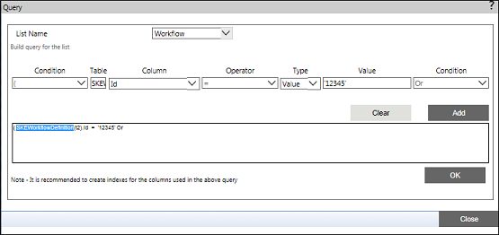

No
This property allows you to build the query for the list and retrieve the data based on the query. You need to point to any particular item to perform a task based on the respective item. This can be done by building the query using List Query.
To set up the list query scope
Field |
Description |
List Name |
Select the list from List Name drop-down. |
Table |
By clicking on this text box, a pop up allows you to select the corresponding table for query. The respective table name will display in the pop up window based on the list you select. |
Column |
From this drop down you can select the column or field of the corresponding list. |
Operator |
From this drop down you can select an operator (either one of =,>, <,>=, <=, <>, IN, Not IN, Like) to build the query. |
Type |
From this drop down you can select a type. The value will be automatically displayed in the text box. |
Condition |
From this drop down you can select the condition [either of End, And, Or, '),' '(']. |
Add |
You can click this button to add a query in the field. |
Clear |
You can click this button to clear the query contents. |
OK |
You can click this button to save this query. |
Close |
You can click this button to close this window. |
